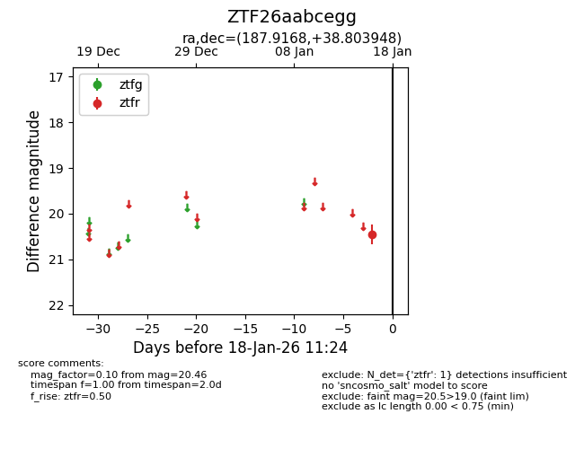
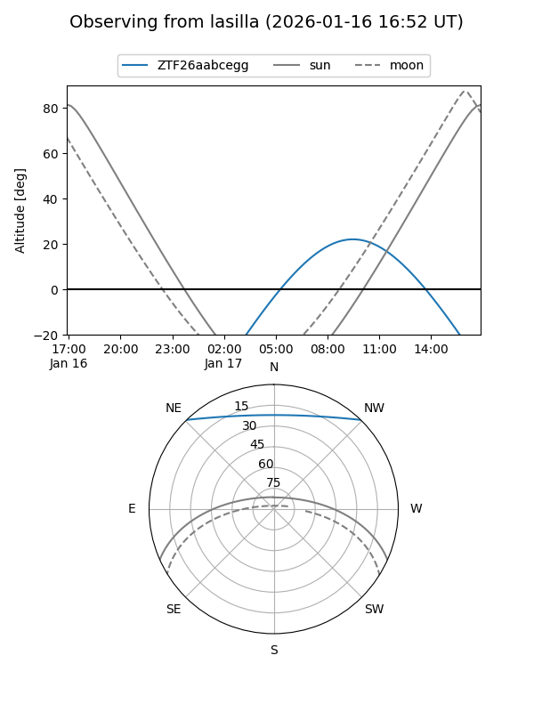
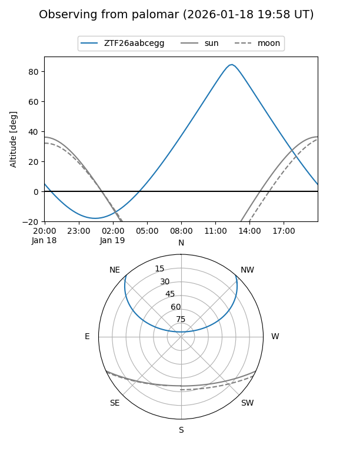

ZTF26aabcegg
Target ZTF26aabcegg at 2026-01-19 11:36
Aliases and brokers:
FINK: link
Lasair: link
ALeRCE: link
alt names
ZTF26aabcegg (ztf,fink_ztf)
Coordinates:
equatorial (ra, dec) = 187.9168,+38.80395
equatorial (HMS+DMS) = 12:31:40.02,+38:48:14.21
galactic (l, b) = (141.1758,+77.61531)
Flags:
Photometry:
last ztfr=20.28
2 ztfr detections
Lightcurve

Visibility


Additional plots